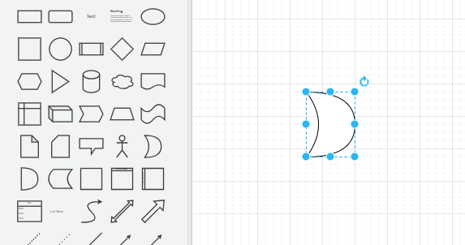
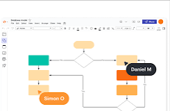
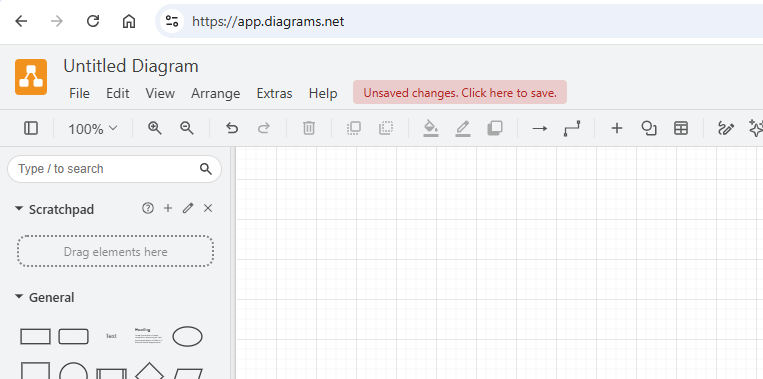
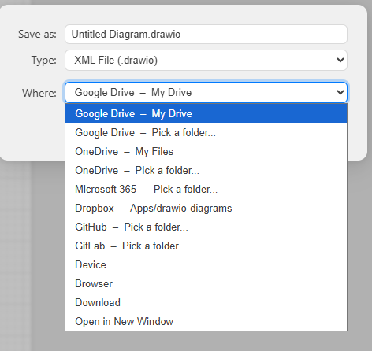

draw.io is a free web-based diagramming tool used for creating flowcharts, UML diagrams, and system designs. It is commonly used in software development to visualize how systems work before coding begins.
draw.io was originally created by JGraph and released as a free diagramming tool. It later became known as diagrams.net and is still actively developed today. It is widely used because it is open, free, and integrates with platforms like Google Drive and GitHub.



